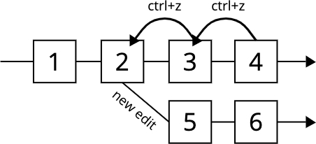

"here's a riddle for you... even though i'm far from the point, i don't make mistakes, i fix yours. what am i? the microsoft word ctrl+z/ctrl+y." - timmy turner
when working in any kind of computer program (a text editor, word processor, slide show creator, art program, and, now, browsers), it is important for us to be able to quickly eliminate the mistakes that we have made. this is one of the benefits of working on a computer. by being able to step backward (and forward) through the changes we make to an electronic document, we are essentially stepping through time!
most common undo functionality operates similarly to the diagram below:
in this example we make four edits, we ctrl+z (undo) twice, and then proceed to make new edits. the original edits ("3" and "4") are lost, and a new branch of edits is created
if we were to redo once after undoing from state "4" to state "2" (with no "new edit"), we would be back at state "3"
if we were to keep redoing after undoing from state "6" to state "1", we would ultimately end in state "6", again
given, you have a working word processor application, and the ability to programmatically interact with it via an api (you can have any api call you need), design how the undo/redo functionality works. in other words, how would you keep track of changes to apply/un-apply to an electronic document?
this problem is intended to be open ended, and should be taken as a "high level architecture" design question
the undo/redo flow should be similar to the image above
hint #1: if you chose to use an object oriented approach, are there any common design patterns that would help?
hint #2: applying a change and undoing that change are equally important. can you create a structure that keeps track of both?
does an "undo/redo" pattern have any applications outside of editing electronic documents?